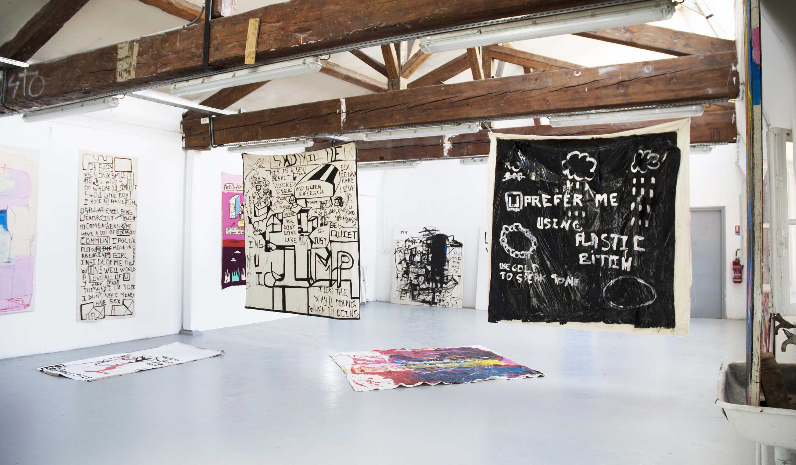

Liebe Und Freiheit

Cimetery’s Night in Glasgow, 2019, acrylic on canvas, 180 x 180 cm
My name is Charlène Juliette Maryline Sojbdor Sukkube, I study at the institut superior of art of Toulouse. I devote all my time to painting, video and music. I feel connected with human beings and nature. I question myself as much on the spoken language, as the language of the body or that of the new technologies, which I assemble with various references like the mythology of the Far East, the celestial hierarchies of the Nordic myths or the Russian art of the last 50 years.
The drawing is the beginning of a situation analysis which often comes from reality. To remain in the flow is to remain in the present and to renew oneself by appropriating contemporary cultural practices to reproduce a new message in it.
Inspired by modern art and popular art in general, I make my own signs that belong to all humanity. Painting is above all a bearer of ideas and technical and practical experiences. How can representations and experiences be artistically transposed? What aesthetic and iconic ideas are developed? These experiences are stored in my brain, they influence the process of my work.
Outsider art, impressionist, expressionist, cubist, abstract, minimalist, contemporary art are sets of information that have a model function and appear as methods that I try to rework, to rediscover. I create fictionsso, metimes readable, sometimes extremely complex.
Texts written in 2018, by Johana Carrier and Marine Pagès article N°14 Place à ..., in Roven revue d'art critique sur le dessin contemporain



The Nexus, 2018, installation of canvas, 309, isdaT, Toulouse

Big Firms, 2018, acrylic on canvas, 220 x 200 cm

Fresh Legs, 2020, installation of canvas, Insel Galerie, Berlin

She Likes Sport, 2017, acrylic on canvas, 160 x 140 cm

Jump, 2019, acrylic on canvas, 200 x 200 cm

Bony and Clyde, 2017, gouache on canvas, 150 x 150 cm

Bitch You Deserve It, 2017, mixed media on canvas, 160 x 200 cm